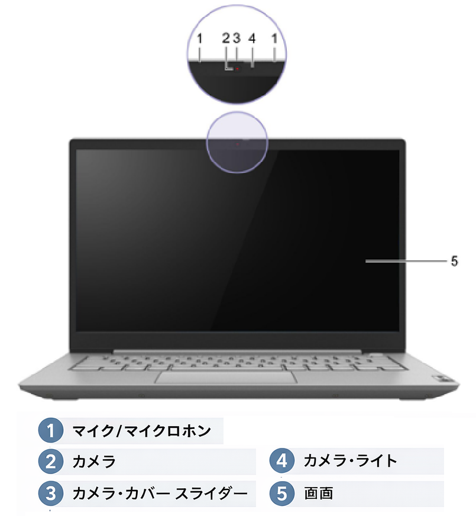
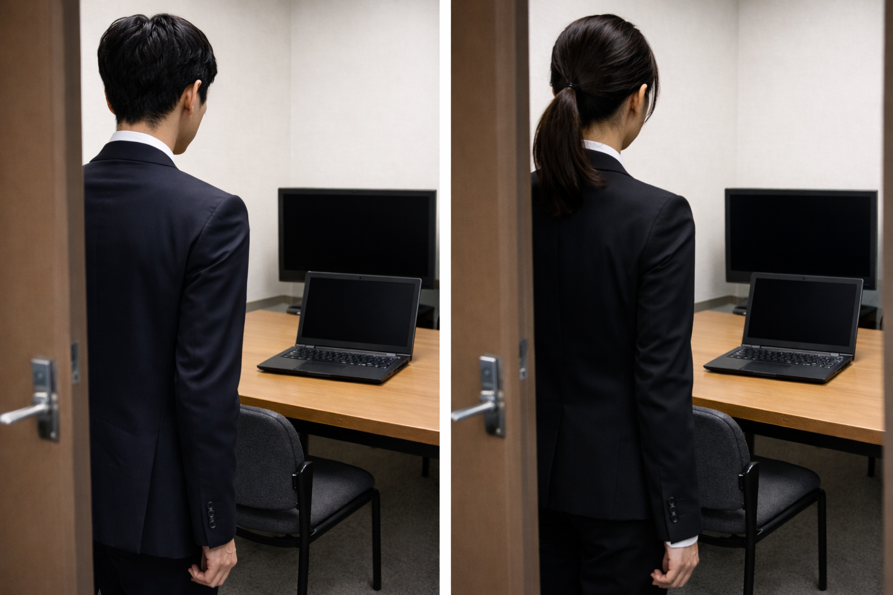
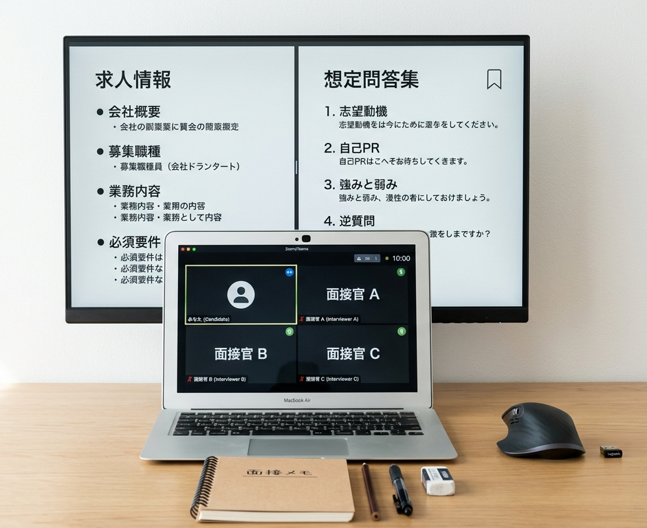

Web面接に向けた事前準備と対策
近年、Web面接を基本とする企業が多くなっています。
本資料では、Web面接の前に確認しておきたい事項と、
面接準備の進め方を整理します。
1. Web面接前に確認しておきたいこと
機材・通信環境・画面設定の準備
1-1. 使用機材の確認
確認しておきたい項目
- 支給されるノートパソコンのカメラ位置
- カメラの物理シャッターの有無
- マイクの位置と感度
- スピーカーまたはイヤホンの音量
- 充電状態、電源ケーブルの接続
- 外付けモニターを使用する場合の表示設定

Fnキー（ファンクションキー）のロック状態によって操作方法が異なるため、事前に確認しておきましょう。
1-2. 通信環境の確認
Web面接では、通信の安定性が非常に重要です。映像や音声が途切れると、それだけで印象に影響します。
確認しておきたい項目
- Wi-Fiが安定しているか
- 通信障害時の代替手段があるか

1-3. 面接で使用されやすいプラットフォームに慣れておく
各プラットフォームで、マイク設定・カメラ設定・画面共有位置・参加方法・レイアウトが異なります。
主なツール
- Google Meet
- Zoom
- Microsoft Teams
- 表示名が本名になっているか確認する
- 入室方法（URL参加、アプリ起動、ブラウザ参加）を確認する
- 背景変更機能は無理に変更しない（自然な背景が最善）
1-4. マイクとカメラの調整
音声と映像は、面接時の第一印象を大きく左右します。
- 事前に音量設定を行う
- 自分の声が聞き取りやすいかテストする
- 普段はミュート運用で雑音混入を防ぐ
- 顔が画角から切れていないか確認
- 顔の大きさが適切か確認
- 表情が見える明るさか確認
- 服装が画面上でどう見えるか確認

1-5. デスクトップのレイアウト
面接中は、面接画面だけでなく、求人情報や想定問答集などの補助資料を見たい場面があります。
推奨構成
- デュアルモニター推奨 →本校面談室ではモニターを用意しています
- 片方をWeb面接用、もう片方を資料確認用にする

1-6. 照明・背景・周囲の環境
1-7. 通知の停止
- 逆光を避ける
- 顔が暗くならない位置に座る
- 背景に不要な物が映り込まないようにする
- 生活音や話し声が入りにくい場所を選ぶ
- メール通知
- チャットツールの通知
- カレンダー通知
- OS の通知
- スマートフォンの着信音や通知音
2. 面接当日に意識したいこと
事前確認とトラブル対応
2-1. 早めに接続確認を行う
開始時刻の直前ではなく、5〜10分前には接続確認を済ませておくと安心です。
確認項目
- URLから正常に入室できるか
- マイクが認識されているか
- カメラがオンにできるか
- 名前表示が適切か
- 音声の聞こえ方に問題がないか
- ポケットティッシュを事前に用意しておくと不測の事態に備えられます
2-2. トラブル時の対応を想定しておく
どれだけ準備していても、通信や機材トラブルが起こることはあります。
対応例
音声が聞こえない場合：
「恐れ入ります。音声がうまく聞き取れないため、再接続を試させてください。」
接続が切れた場合：
速やかに再入室し、チャットまたはメールで一報を入れる
映像不具合がある場合：
カメラのオンオフやアプリ再起動を試す
3. 面接資料の準備方法
応募企業に関する情報を体系的に整理する
3-1. 応募先企業の情報および求人情報
まず、応募先企業について調べるための情報を整理します。
確認しておきたいもの
- 求人情報のURL
- 企業公式サイトのURL
- 企業公式サイト内の採用ページ
- 求人媒体と公式採用ページの内容の差異
進め方
ChatGPTのプロジェクト内の情報源に、テキストで整理しておくと管理しやすくなります。
求人サイトのURLは会員専用ページの場合があります。誰でも確認できるURLを記載しておくと扱いやすくなります。
3-2. 履歴書・職務経歴書
基本方針
- 送付済みであれば、その最新版を情報源にする
- 未送付であれば、応募企業向けに整えたうえで送付版を情報源にする
重要： 面接では提出済み書類に基づいて質問されることが多いため、実際に提出した内容と一致していることが重要です。
3-3. ポートフォリオ
取り扱いのポイント
- ファイル数が多い場合はZIP化してまとめる
- 重すぎるデータは避ける
- README や主要作品の説明資料があれば十分
AIを使った成果物が含まれる場合、どこまでAIを活用したか、自分が主に担当した工程はどこかをテキストで添えておくと、面接対策の精度が上がります。
3-4. 職業訓練校のカリキュラムと学習記録
訓練校のカリキュラム表をプロジェクトの情報源として共有しておくと有効です。
共有しておきたい情報
- 訓練校名
- コース名
- 受講期間
- カリキュラム表
- 学習中の分野や授業の流れ
共有する意義
面接で「職業訓練校で何を学んでいますか」と聞かれることは少なくありません。カリキュラム名を並べるだけでなく、そこから何を学んだか、どんな気づきがあったかまで話せるようにしておくと印象が大きく変わります。
学習記録を残す考え方
学習内容を記録することで、理解の定着と面接での説明がしやすくなります。
おすすめの記録方法
① その日に受けた授業の簡易メモ
授業名だけでなく、何を学んだか、何を感じたかを一言入れる
例：「ChatGPT活用演習①：質問の仕方によって回答の質が変わることを実感した」
② 週末時点でのその週のまとめ
今週何が身についたか、どこに課題を感じたかを整理する
例：「今週は基礎を学び、理解を深めることの大切さを意識できたが、手を動かす量を増やす必要がある」
この運用の利点
- どの分野を学習中か把握できる
- 理解度の進捗が可視化される
- 面接で話せる具体的な学習内容が整理される
4. ChatGPTを活用した面接準備
情報整理から想定問答作成まで
4-1. 求人内容の理解を深める
ChatGPTへの依頼例
「情報源に応募先企業の求人情報リンクを載せてあります。この求人の特徴を整理してください。」
4-2. 訓練校での学びを面接で話せる形に整理する
ChatGPTへの依頼例
「カリキュラムと学習メモを共有しています。面接で『何を学んでいますか』と聞かれたときに、授業名の羅列ではなく、理解や気づきも含めて答えられるよう整理してください。」
💡 ポイント： 単なる受講履歴ではなく、学びを自分の言葉で説明する準備がしやすくなります。
4-3. 想定問答集を作成する
ChatGPTへの依頼例
「Web面接時の一般的な想定問答集と、応募先企業向けの想定問答集を作成してください。」
4-4. テンプレートを活用する
見やすいテンプレートがある場合は、あらかじめ情報源に入れておく方法が有効です。好みのレイアウトに近い形で出力しやすくなります。
4-5. 必ず内容の確認をする
作成された資料は必ず自分の目で確認し、整理してください。ChatGPTは便利な一方、必要以上にあなたを過大評価してしまう可能性があります。
5. 最終チェックリスト
面接前に一通り確認しておくもの
必須のチェック項目
- カメラが使える状態になっている
- マイクと音量の確認ができている
- 通信環境に問題がない
- 使用するWeb会議ツールを事前に開いて確認している
- 表示名が適切である
- 通知をオフにしている
- 面接URLをすぐ開ける状態にしている
推奨のチェック項目
- デュアルモニターまたは画面配置を調整している
- 想定問答集を手元で見られるようにしている
- 企業情報、求人情報、提出書類を見返している
- 緊急時の再接続手段を準備している
- 照明と背景を確認している
- 訓練校のカリキュラムと学習メモを整理している
まとめ
Web面接では、受け答えの内容だけでなく、通信環境、映り方、音声、画面構成、事前準備の精度が面接全体の進行に大きく影響します。
準備の流れ（重要）
- 機材を扱える状態にしておく
- 面接環境を整えておく
- 応募先情報と提出書類を整理しておく
- 訓練校での学習内容を振り返れるようにしておく
- ChatGPTを活用して想定問答や資料を準備しておく
カリキュラム表だけでなく、日々の学びや理解を短く記録しておくことで、面接で「何を学んでいるのか」をより具体的に、自分の言葉で話しやすくなります。これは知識の有無だけでなく、「会社の中に入っても継続して学べる姿勢ができている」と面接官に伝えるうえでも有効です。